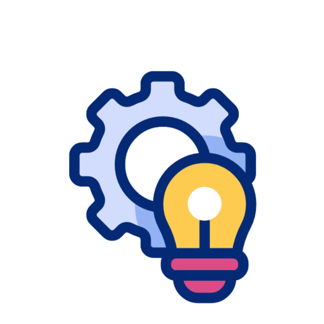

Innovation
Innovation is key to progress.
Challenges arise, yet
persistence leads
the way

Sustainability
Sustainability fosters long
term growth.Solutions emerge,
driven by care and action for
the planet.
Infrastructure
Infrastructure supports strong
foundations. Planning and
development pave the way
for progress.

Empowerment
Empowerment drives personal
growth. Strength and
confidence build as we
rise together.